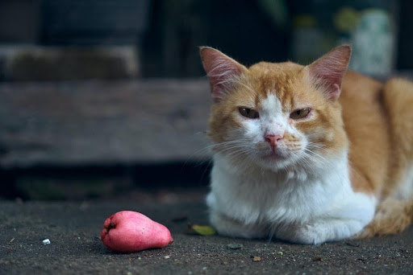
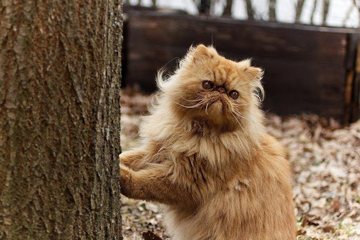
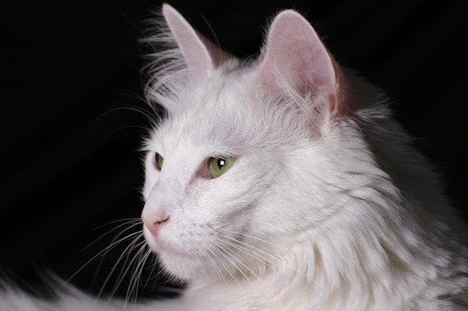
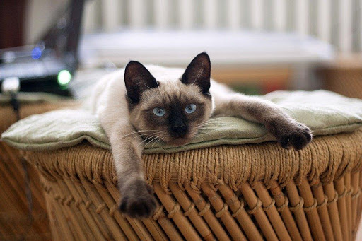
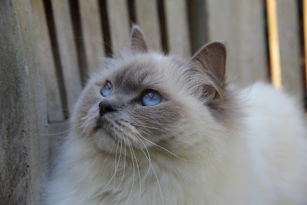
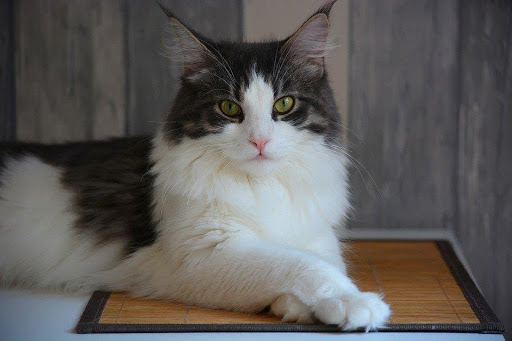
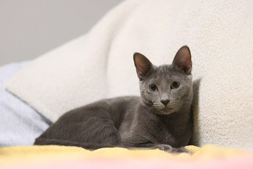

Saat ini, kucing adalah salah satu hewan peliharaan terpopuler di dunia.[9] Kucing yang garis keturunannya tercatat secara resmi sebagai kucing trah atau galur murni (pure breed), seperti persia, siam, manx, dan sphinx. Kucing seperti ini biasanya dibiakkan di tempat pemeliharaan hewan resmi. Jumlah kucing ras hanyalah 1% dari seluruh kucing di dunia, sisanya adalah kucing dengan keturunan campuran, seperti kucing liar atau kucing kampung. Kucing juga merupakan jenis hewan peliharaan yang banyak diminati karena tingkah lakunya yang lucu.
Kucing Kampung
Kucing domestik mungkin menjadi jenis kucing yang paling banyak ditemui. Jenis kucing domestik lebih populer dikenal dengan nama kucing kampung Kucing kampung juga jenis kucing yang mudah untuk dipelihara. Kucing kampung juga tidak memerlukan perawatan khusus layaknya kucing ras lain yang mempunyai karakteristik khas. Jadi kamu tidak repot-repot mempersiapkan banyak hal untuk jenis kucing ini.
Kucing Persia
Kucing persia menjadi jenis kucing ras asing yang pertama diimpor ke Thailand. Jenis kucing ini juga menjadi salah satu ras kucing yang paling populer dijadikan hewan peliharan baik lokal maupun internasional Kucing persia memiliki kepala dan dahi yang bulat lebar dan telinga kecil yang ujungnya membulat. Bentuk ekornya pun pendek dan kaki yang pendek. Kucing persia memiliki karakter yang ramah dan mudah bergaul, jadi cocok jadi teman bermain. Jenis kucing ini juga memiliki kebiasaan yang lemah lembut, ramah, santai periang, dan cerdas. Parasnya yang menggemaskan dan unik membuat Kucing Persia jadi primadona para pecinta kucing. Asal usul ras Kucing Persia adalah Persia yang saat ini menjadi Turki dan Iran. Ada dokumen kuno yang menyatakan bahwa Kucing Persia diperkenalkan pertama kali di Eropa sebagai Kucing Anggora Turki. Mereka kemudian melakukan kawin silang dengan ras kucing lain yang menghasilkan jenis Kucing yang didaftarkan sebagai Kucing Persia di Inggris.
Kucing Anggora
Banyak orang yang masih kesulitan membedakan antara Kucing Anggora dan Kucing Persia, padahal kedua jenis kucing ini berbeda Bulu yang lembut, panjang, dan lebat mungkin membuat Anggora sulit dibedakan dari Kucing Persia. Jika Kucing persia berbadan gemuk, lain halnya dengan Kucing Anggora yang cenderung memiliki ukuran bentuk tubuh yang lebih kurus. Kucing Anggora memiliki ciri khas pada bentuk kepalanya yang segitiga berbulu lebat menyerupai singa dengan hidung yang lebih mancung dari kucing jenis lainnya. Leher dengan bulu yang panjang juga jadi ciri khas yang tidak bisa dialihkan dari Kucing Anggora. Itu lah yang membuat kucing jenis ini sangat menggemaskan. Cara merawat kucing jenis ini tidak jauh berbeda dengan merawat Kucing Persia. Karena bulunya yang lebat dan panjang, sang pemilik harus rajin memperhatikan bulu dan menyisirnya. Kucing Anggora biasanya dijual dengan harga yang cukup mahal sekitar 1 juta sampai 2 juta.
Kucing Siam
Kucing Siam merupakan jenis kucing dengan ras oriental yang populer di Thailand dan paling terkenal dari semua jenis kucing pedigree Di negara asalnya, Kucing Siam dikenal sebagai “Royal Cat of Siam”. Kucing Siam ditemukan di Ancient Siamese City of Ayhuda, sebuah kota di Buma sekitar tahun 1350-an. Muncul pertama kali di Australia tahun 1890, Kucing Siam kini menjadi salah satu jenis kucing yang paling populer sebagai hewan peliharaan. Kucing Siam memiliki 3 jenis, yakni Kucing Siam klasik, Kucing Siam Tradisional, dan Kucing Siam Modern. Kucing Jenis ini memiliki karakteristik bentuk tubuh yang ramping, ekor panjang, mata biru, dan bulunya pendek bertitik gelap pada muka, telinga, ekor, dan kakinya. Jenis Kucing Siam akan menjadi hewan peliharaan yang penuh kasih sayang meskipun mereka mungkin tidak terlalu manja seperti jenis kucing lainnya. Kamu mungkin akan jarang mendapati Kucing Siam ini duduk dipangkuan sang pemiliknya. Kucing Siam akan menjadi hewan peliharaan yang mewah. Harga Kucing Siam biasanya dibanderol mulai Ratusan Ribu sampai Jutaan Rupiah tergantung ukuran dan usia si kucing.
Kucing Ragdoll
Kucing Ragdoll merupakan jenis kucing asal Amerika Serikat dengan nama asli Ragdoll yang diambil dari sifatnya yang jinak layaknya sebuah boneka Kamu mungkin akan sering mendapati Kucing Ragdoll ini bermanja-manja dan bergantungan di tangan sang pemilik layaknya rag doll. Karakteristik tubuhnya hampir sama dengan jenis Kucing Persia dan Siam dari matanya yang biru sampai wajah dan pipinya yang bulat. Dadanya lebar berotot dengan tulang kaki yang kuat dan tengkoraknya juga besar. Kucing jenis ini memiliki sifat yang tenang, santai, dan sangat penyayang. Kucing Ragdoll menyukai ketenangan namun tetap senang jika berada di sekitar banyak orang. Pemilik kucing jenis ini harus rajin menyikat bulunya dan menyiapkan tempat tinggal kucing yang banyak untuknya bermain. Kucing Ragdoll adalah jenis kucing yang suka bermain berkeliaran kesana kemari dan berpetualang. Kucing ini biasanya dijual dengan harga mulai 3 Juta sampai 10 Juta.
Kucing Maine Coon
Kucing Maine Coon merupakan jenis kucing paling besar dari semua jenis Kucing Domestik Rata-rata berat Kucing Maine Coon mencapai 15 kilogram. Kucing Maine Coon termasuk jenis kucing yang kuat, perkasa, dan bisa bertahan hidup dengan iklim yang ekstrim. Kucing jenis ini memiliki karakteristik bulu yang tebal dan halus, mata besar, dan cakar yang besar. Asal ras kucing Maine Coon adalah Amerika Utara, tepatnya negara bagian Maine. Maine Coon merupakan hasil persilangan antara kucing domestik bulu pendek dengan kucing luar negeri berbulu panjang. Ada pula yang menyatakan bahwa Kucing Maine Coon merupakan hasil persilangan antara kucing dan rakun. Sifatnya yang lembut dan penyayang akan membuat Kucing Maine Coon sangat cocok jadi hewan peliharaan. Kucing jenis ini juga setia pada pemiliknya. Untuk Kucing Maine Coon usia 3-4 bulan bisa dihargai sampai 8 juta. Kucing ras hingga saat ini memang banyak digemari oleh berbagai kalangan. Namun, apakah kamu sudah memiliki pengetahuan yang cukup untuk memeliharanya? Pelajari berbagai informasi menarik mengenai kucing ras pada Buku Pintar Kesehatan Kucing Ras.
Kucing Sphynx

Kucing Sphynx adalah salah satu jenis kucing yang unik karena hampir tidak memiliki bulu sama sekali Di Australia, Kucing Sphynx menjadi satu-satunya jenis kucing yang dikenal tidak memiliki bulu. Namun sebenarnya Kucing Sphynx masih memiliki bulu yang sangat pendek dan hampir menyerupai kulit. Uniknya lagi Kucing Sphynx juga menjadi satu-satunya jenis kucing yang memiliki kelenjar keringat. Karena keunikannya ini lah Kucing Sphynx banyak diburu para pecinta kucing. Kucing jenis ini memiliki karakteristik tubuh yang ramping dengan telinga yang berbentuk segitiga, kulit kening yang berkerut, dan dada yang kuat. Bentuk ekornya kecil dan panjang dan beberapa kucing jenis ini memiliki kumis. Sphynx memiliki sifat yang penuh kasih sayang dan bisa bergaul dengan hewan-hewan peliharaan lainnya.
Kucing Russian Blue
Kucing Russian Blue berasal dari daerah pelabuhan Arkhangelsk, Rusia. Kucing jenis ini memiliki bulu yang anggun dan mata hijau yang berkilau Lapisan bulu Kucing Russian Blue sangat berbeda dengan jenis kucing lainnya, yakni berwarna perak biru, berukuran pendek, tebal, dan sangat halus. Memiliki karakteristik yang anggun, Kucing Russian Blue dapat jadi hewan peliharaan yang mewah dan megah. Hal ini juga berpengaruh pada harga jenis kucing ini yang fantastis mencapai 39 jutaan. Sedangkan harga dibandrol sekitar 900 ribuan untuk jenis Kucing Russian Blue campuran.
Sumber Kucing